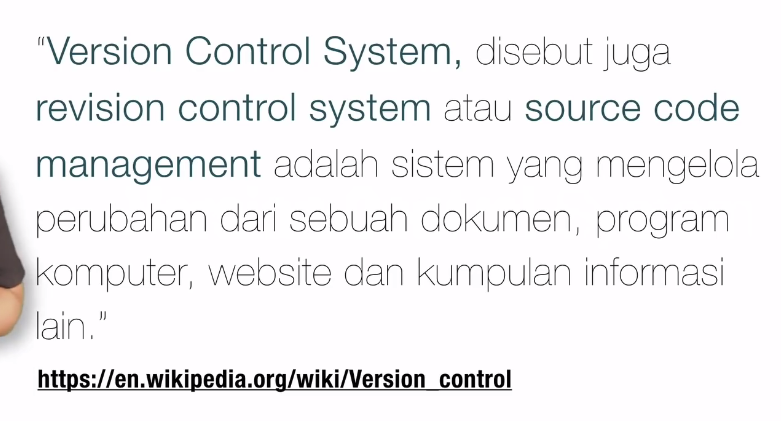
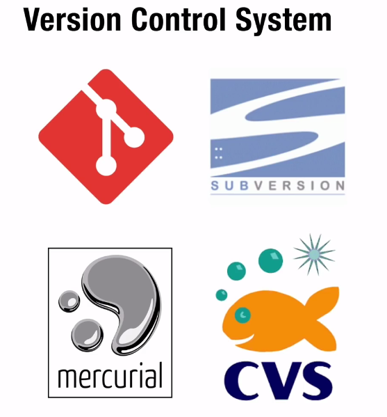
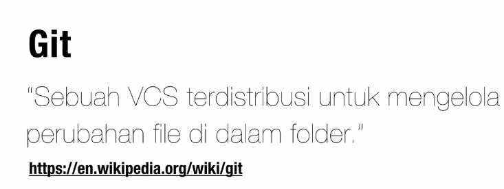
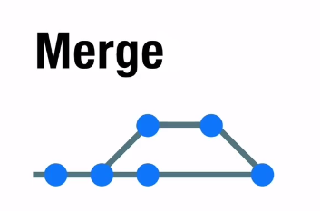
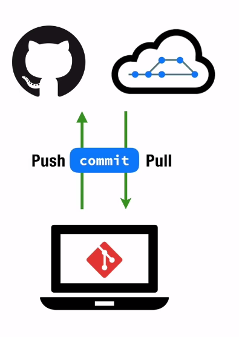
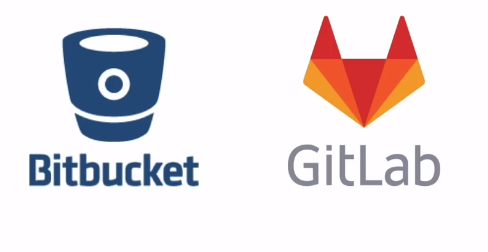

Intro
Apa itu git
- salah satu dari VCS(Version Control System)

-
Sebuah sistem yang dapat mengelola perubahan didalam
document kita
Kenapa harus menggunakan VCS
-
Kesulitan membuat versi / melacak versi dari history
perubahan
- ketika kolaborasi
- sharing
Kesimpulan
-
Sebuah sistem yang menyimpan 'rekaman/snapshot'
perubahan pada source code
-
Memungkinkan bekerja berkolaborasi dengan lebih baik
-
Mengetahui siapa yang melakukan dan kapan sebuah
perubahan terjadi
-
Memungkinkan kita untuk kembali ke keadaan sebelum
perubahan (checkout)
Apk Version Control System
- git
- Subversion (SVN)
- Mercurial
- CVS

Git?

-
Sebuah software untuk mengelola perubahan file di dalam
folder
- folder : repository / repo
-
Riwayat perubahan file disimpan menggunakan serangkaian
commit
Tanpa git
Brench
Merge

Github
-
» Layana cloud untuk menyimpan & mengelola project
/ repo git.
- Instagramnya para programmer.
Perbedaan Git dan Github
- Github perlu internet
- github sebuah website didalam nya menggunakan git

Layanan Selai Github

Recap
- Version Control System
-
Sistem yang menyimpan & mengelola rekaman perubahan
dari source code
- Git
- Salah satu software yang bisa melakukan VCS
- Github
- Website / layanan untuk mengelola project Git
Istilah Git
- repo
- commit
- rekaman / snapshot dari repo kita
- hash
- penanda unik pada sebuah commit
- checkout
- berpindah ke sebuah commit
- branch
- cabang dari sebuah commit
- merge
- remote
- sumbar yang memiliki repo
- clone
- mengambil repo dari remote
- push
- mengirimkan commit ke repo
- pull
- mengambil commit dari repo